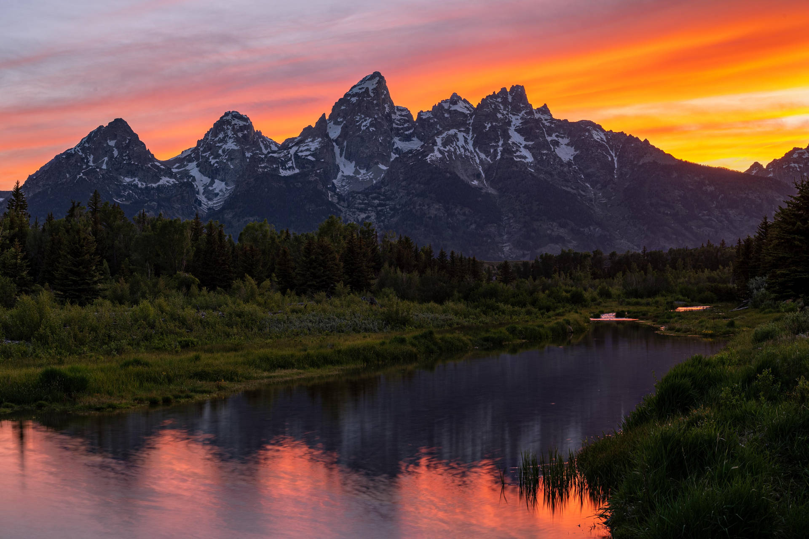

About the Park
The Grand Teton National Park sits in northwestern Wyoming and features some of the most dramatic mountain scenery in the country. The Teton Range rises abruptly from the valley floor with no foothills in between, making for jaw dropping views.

Things To Do
- Hiking
- Cascade Canyon Trail
- Taggart Lake Trail
- Delta Lake
- Water Activities
- Kayaking on Jenny Lake
- Swimming
- Ferry across Jenny Lake
- Wildlife Watching
- Moose and elk at dawn
- Bear sightings along canyon trails
- Wolf packs in the valley
Best Hikes
Cascade Canyon Trail is one of the most popular hikes in the park, offering stunning views of the Teton range. The trail is 9 miles round trip and considered moderate difficulty.
Taggart Lake Trail is a great beginner hike at 3 miles round trip with beautiful lake views and wildflowers in the summer.
Delta Lake is a challenging 7 mile round trip hike that rewards you with a stunning turquoise alpine lake right at the base of the Grand Teton.